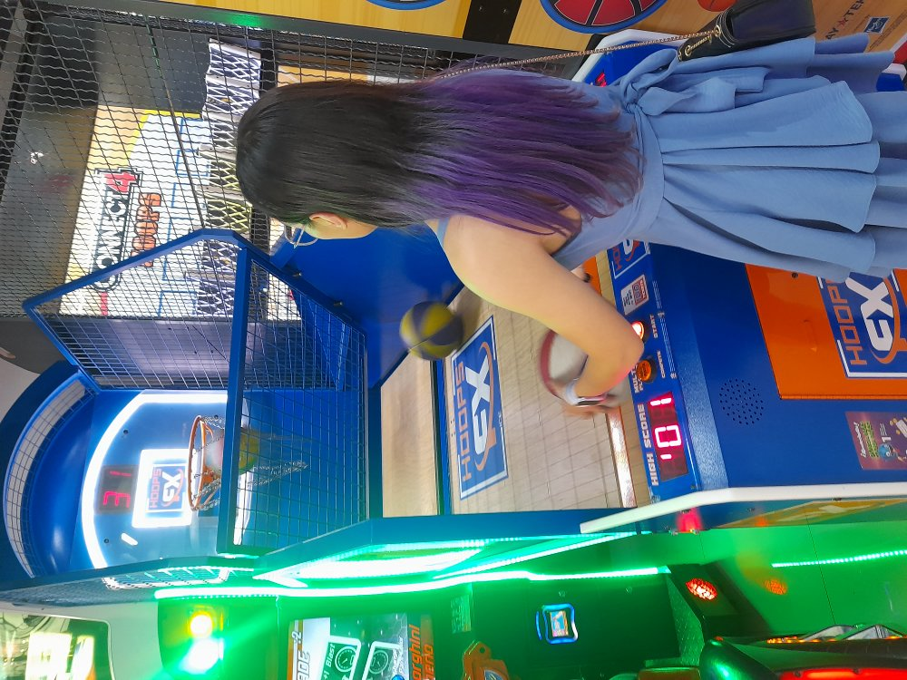
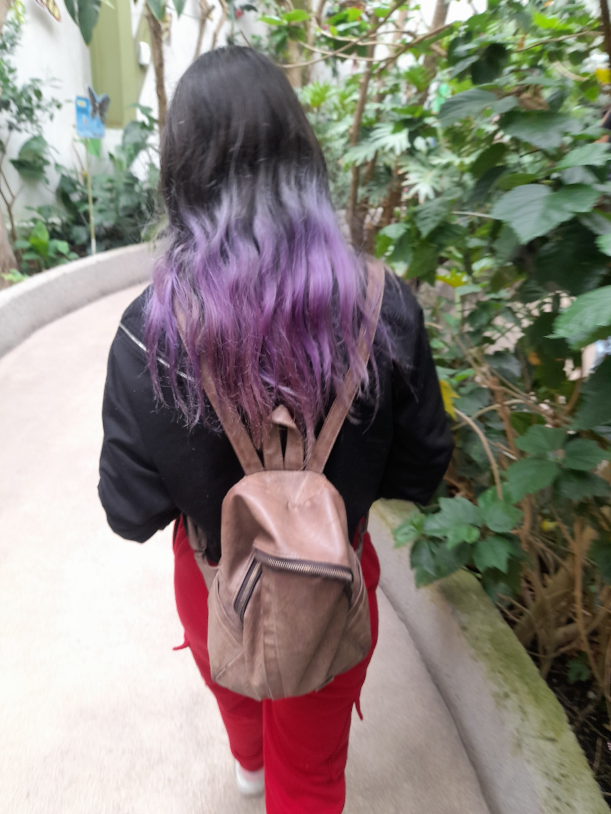
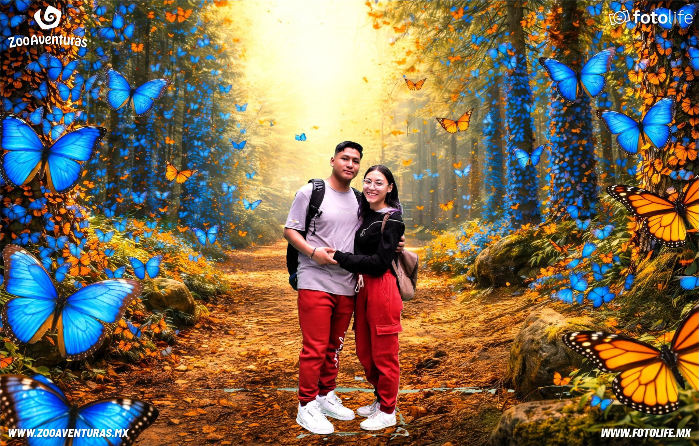

23 · 08 · 2026
El comienzo de nosotros
Hay fechas que simplemente pasan… y hay otras que merecen quedarse para siempre.❤️
Para mí, esta es una de ellas.
Hoy es uno de esos dias epeciales, y aunque quiza todavia no sepas por que prepare todo esto solo quiero que recuerdes algo antes de continuar:
ESTA FECHA ES IMPORTANTE PARA MI POR QUE TU HACES QUE CUALQUIER DIA SE VUELVA ESPECIAL.
Asi que tomate unos minutos, ve todo con calma y dejate llevar
No quiero adelantarte nada... solo quiero que disfrutes el pequeño detalle que prepare para ti.❤️
¿Lista para comenzar?
UN MES CONTIGO
Y de repente...
Este mes significa mucho más para mí de lo que podría explicar en unas cuantas palabras
Porque no es solamente un mes más en el calendario… es un mes que me recuerda todo lo que hemos vivido, cada momento, cada sonrisa, cada conversación y cada pequeño detalle que poco a poco ha hecho que te conviertas en alguien tan especial para mí.
Este mes representa una etapa que quiero recordar con mucho cariño. Una etapa en la que he podido conocerte más, descubrir tu forma de ser, disfrutar de tu compañía y darme cuenta de lo mucho que significas para mí.
Y quizá lo más bonito de todo es que, cuando pienso en este mes, no pienso solamente en una fecha
Pienso en ti. ❤️
Por eso quise hacer algo diferente para recordarte lo especial que eres para mí.
En tan poquito tiempo te convertiste en alguien que quiero tener cerca, alguien con quien me gusta compartir mis días y alguien que logra sacar una versión de mí que no sabía que estaba ahí.
La versión romántica, cursi y que escribe páginas enteras para esa niña que me encanta. ❤️

Un momento que quiero guardar
Nuestra primera salida fue en Recórcholis, y recuerdo lo emocionado y nervioso que estaba por verte. ❤️
Tenía muchas ganas de estar contigo, de hacerte sonreír y de disfrutar cada momento a tu lado. Al principio los nervios no me dejaban estar tranquilo, pero cuando estuve contigo, todo se sintió mucho más bonito y natural.
Entre juegos, risas y miradas, ese día se quedó guardado en mi corazón de una manera muy especial.
Porque aunque en ese momento no lo sabía, esa salida sería el comienzo de una historia que hoy significa muchísimo para mí… y de muchos momentos que quiero seguir viviendo contigo. ❤️

Un momento de miles en los que soy feliz
Recuerdo aquella foto que te tomé de espaldas en el mariposario. 🦋❤️
Te veía tan feliz, disfrutando ese momento, y no sé cómo explicarlo, pero verte feliz también me hacía feliz a mí.
Lo más bonito es pensar que, mientras yo te veía así y guardaba ese instante en una foto, faltaban solo unas horas para pedirte que fueras mi novia.
Quizá tú no lo sabías todavía, pero yo ya llevaba el corazón lleno de nervios, ilusión y muchas ganas de comenzar algo bonito contigo. ❤️

Otro pedacito de nosotros
La foto que lo representa todo
Y después llegó esta foto… nuestra primera foto juntos. 🦋❤️
Con mariposas detrás, justamente algo que te gusta tanto, y nosotros dos sin saber que estábamos a muy poquito de vivir uno de los momentos más importantes de nuestra historia.
Poco después de esta foto, ese mismo día, reuní todo mi valor y te pedí que fueras mi novia. ❤️
Por eso esta foto es tan especial para mí. No solo porque es la primera y, hasta ahora, la única foto que tenemos juntos, sino porque representa el momento exacto en el que dejamos de ser solamente dos personas compartiendo momentos y comenzamos nuestra historia juntos.
Quizá para alguien más sea solo una foto…
pero para mí, siempre va a ser la foto que guarda el comienzo de nosotros. 🦋❤️
MI PARTE FAVORITA
Mi labios de cereza
No podía hacer esto y no dejar un pequeño espacio para esa parte de ti que me encanta tanto.
“Si pudiera guardar un beso tuyo para los días en que te extraño, creo que tendría el mejor recuerdo del mundo.”
DESDE AQUEL DÍA
El tiempo contigo ❤️
PARA TI, MI PRINCESA
Lo que quiero que sepas
Mi niña, feliz primer mes. ❤️
No sabes lo bonito que se siente poder decir que ya llevamos un mes juntos. Tal vez un mes parezca poquito para algunas personas, pero para mí ha sido suficiente para darme cuenta de lo mucho que me gusta tenerte en mi vida.
Me gusta estar contigo. Me gustan tus besos, tus caricias, nuestras conversaciones, nuestras risas y hasta esos momentos en los que simplemente estamos juntos sin necesitar hacer nada.
Me gusta la tranquilidad que siento cuando estoy contigo. Quiero que tú también puedas sentir eso conmigo: que puedas ser tú, contarme lo que sea, reírte, hablarme de tus cosas y saber que siempre voy a querer escucharte.
Quiero verte cumplir tus metas, celebrar tus logros, acompañarte cuando algo no salga como esperabas y hacerte sentir que tienes a alguien que está de tu lado.
Y aunque nunca pensé que iba a volverme tan romántico, aquí estoy, escribiéndote todo esto porque tú haces que me nazca hacerlo.
Gracias por este primer mes, mi amor. Gracias por cada beso, cada abrazo, cada risa y cada momento contigo.
Y sí… tengo que decirlo una vez más:
me encantan tus labios de cereza. 🍒
Te quiero muchísimo,
mi niña. ❤️
PRIMER MES
Esto apenas comienza.
Tenemos muchísimas cosas por vivir, lugares por conocer, fotos por tomar, risas por compartir y recuerdos por crear.